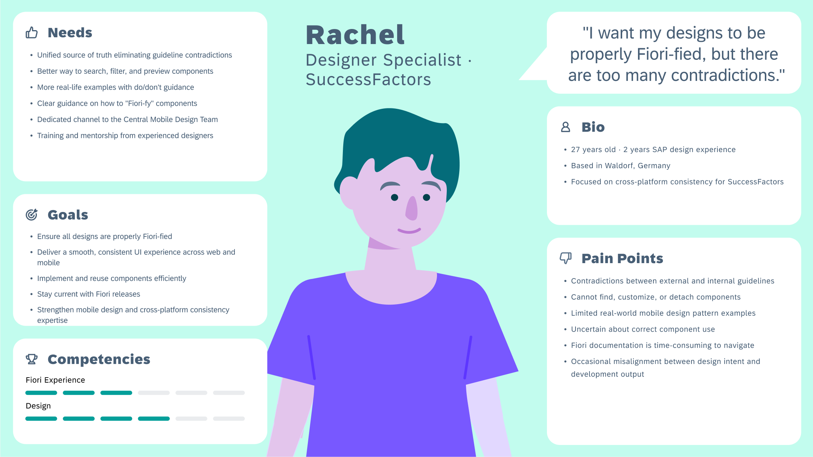
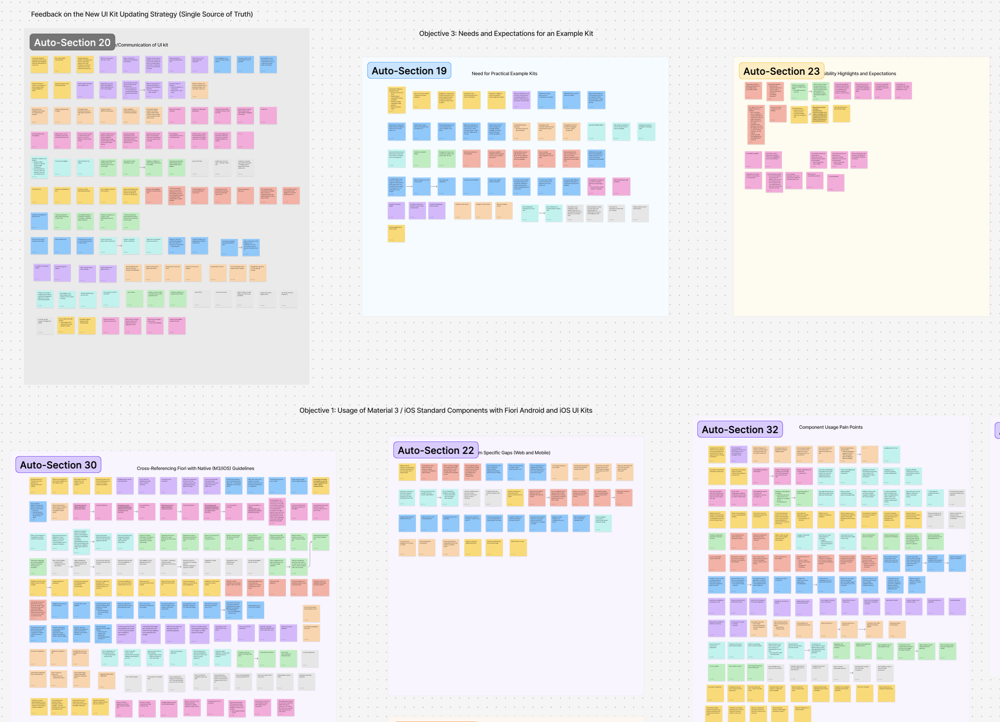
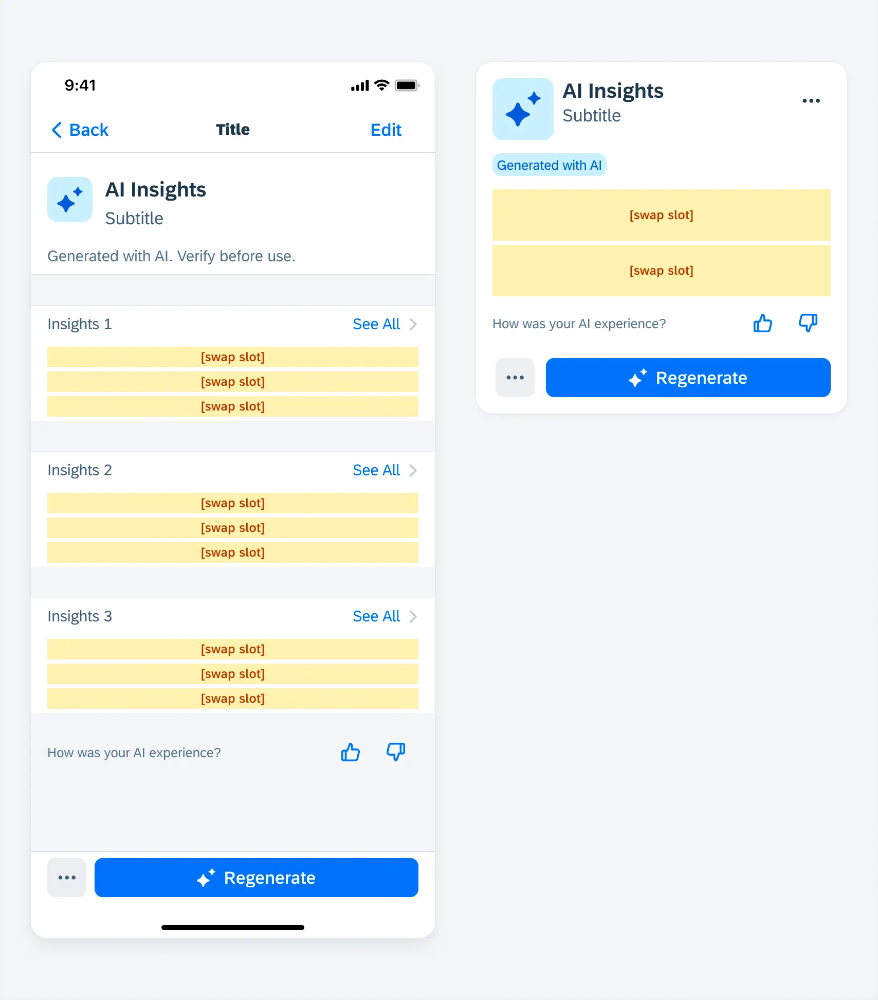
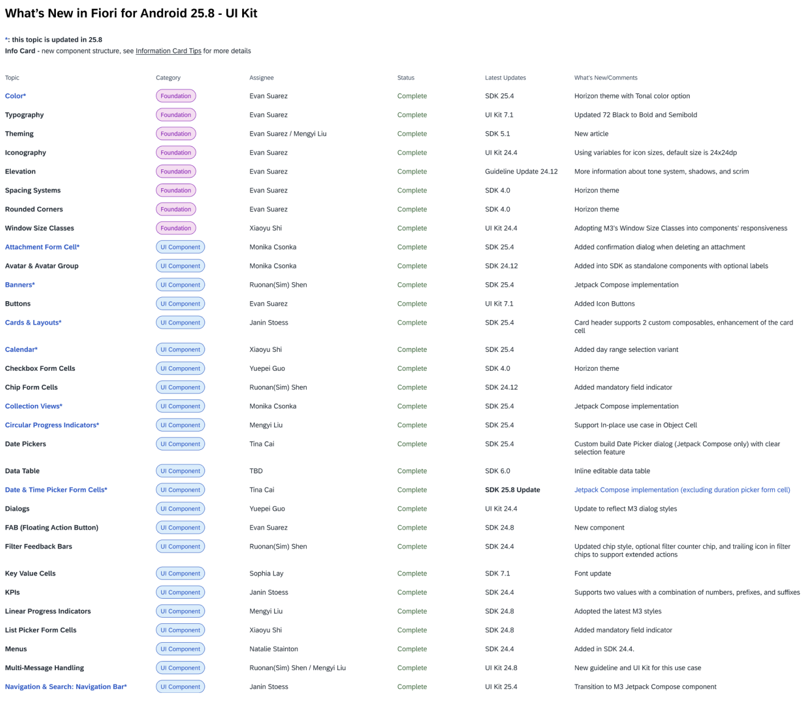

This case study is password protected. Enter the password to continue.
Measured ImpactMixed MethodsWorkshop Facilitation
02 · SAP Fiori Mobile Design System · Aug–Sep 2025
Designers were abandoning a working design system. The problem was not quality. It was trust.
Satisfaction with SAP Fiori Mobile had dropped to 3.71/5 and designers were quietly building custom components. I challenged the quality hypothesis, uncovered three structural trust failures, and drove the first major design system update in 15 years, lifting satisfaction by +12.6% in one quarter.
My Role
Lead and sole researcher. Scoped, recruited, and ran all 19 sessions. Designed the benchmark survey, facilitated the prioritization workshop, and drove 3 changes shipped in v25.04.
+12.6% satisfaction in one quarter (3.71 to 4.18, same n=160 cohort). Three structural changes shipped in v25.04. First major design system update in 15 years. ~8 weeks of engineering rework prevented. Android and iOS leads aligned on a shared problem definition for the first time.
Context: Challenging the Assumption
When I joined SAP, 600+ internal designers depended on Fiori Mobile as their primary design framework. The system had been in place for 15 years. Yet satisfaction was falling and teams were quietly detaching from components and building custom alternatives.
The prevailing assumption inside the team was that designers were not following the system correctly. I wanted to challenge that. If so many designers across different teams and products were all independently leaving the system, the more likely explanation was that the system itself was failing them. I proposed a mixed-methods study to find out where and why.
Study participants — 19 total, across both platforms and roles
12
Designers (iOS and Android)
7
Developers working with Fiori Mobile
1 hr
Per session, moderated remote interview
160
Benchmark survey participants (pre/post)
Team's assumption
"Designers are not following the system correctly. Improve component quality and adoption will return."
→
My research question
"Why do designers feel unsafe depending on this system? Which structural conditions are making it faster to abandon it than to use it?"
Research Program
Mixed methods were chosen because the problem had two unknowns: the nature of the abandonment behavior (qualitative) and the scale of it across the broader population (quantitative). Interviews alone would have left the scale question open. A survey alone would not have revealed the behavioral mechanism. Running both in sequence allowed findings from interviews to directly inform the survey instrument.
Phase 1: Moderated interviews (n=19)
1-hour sessions combining think-aloud workflow observation with structured feedback on specific UI kit components. Designers and developers were interviewed separately to surface role-specific pain points before identifying shared patterns.
12 designers across iOS and Android product teams
7 developers working directly with Fiori Mobile components
Sessions observed live component usage and asked participants to walk through a real design decision
Four structural failure patterns emerged consistently across both groups
Phase 2: Benchmark survey (n=160, pre/post)
A quantitative survey was run before and after v25.04 shipped to measure whether the structural changes moved satisfaction at scale. The survey instrument was built directly from interview findings to ensure the right dimensions were being measured.
The same 160 internal designers and developers completed both the pre-launch and post-launch survey, enabling a direct within-cohort comparison
Pre-launch baseline: 3.71/5 overall satisfaction
Post-launch (one quarter): 4.18/5
Validated that qualitative trust failures were not edge cases but systemic
Key Findings: The Cycle of Abandonment
Themes were developed through affinity mapping in Dovetail across all 19 sessions. Three structural failure patterns emerged that together formed a self-reinforcing loop I named the Cycle of Abandonment.
SAP Fiori guidelines contradicted Apple HIG and Material Design in unresolved ways. Designers spent significant time cross-checking three sets of rules for every component decision. They were not abandoning the system because they did not care about consistency. They were abandoning it because the system could not tell them what correct looked like.
2
Rigid components created a debt spiral no team could exit
Any customization required detaching from the component. Detaching meant losing future updates. Losing updates meant building custom alternatives. Custom alternatives compounded with every release. The system's inflexibility was directly generating the abandonment it suffered from.
3
Accessibility anxiety produced worse accessibility outcomes
Developers could not verify WCAG compliance within the system, so they built custom components they believed were safer. Those builds were objectively less accessible. Unverifiable risk produced worse outcomes than the risk itself.
The Cycle of Abandonment — how the three failures compound
Conflicting standards
Designer cross-references SAP, Apple HIG, and Material Design
→
Forced detachment
Any customization breaks the component link to future updates
→
Custom builds
Team builds alternatives they believe are safer and faster
→
Debt compounds
Custom components fall further behind with every release cycle
↩ Loop repeats — abandonment accelerates over time

Designer persona developed from interview synthesis: Rachel represents the core pattern across the 12 designer participants. Her pain points (conflicting guidelines, forced detachment, accessibility uncertainty) mapped directly onto the three structural failure modes identified in the research.
"Sometimes I spend more time figuring out which component to use than actually designing."
Internal designer, live workflow observation
Building Buy-in: The Journey Mapping Workshop
The challenge
The design system team had operated on the quality assumption for years. A readout presenting findings would have been easy to debate. I needed stakeholders to feel the pain themselves rather than hear it from me. I facilitated a journey mapping workshop where the Android and iOS design system leads and their teams worked directly with the raw research data to map designer and developer experiences. Co-ownership of the synthesis meant co-ownership of the problem.
Workshop attended by Android and iOS design system leads and key team members
Participants worked with real quotes and behavioral observations from the 19 sessions, not researcher summaries
Journey maps produced in the workshop became the shared artifact the team used to prioritize v25.04 changes
Framing each failure as structural rather than attributable to any individual reduced defensiveness and made action easier

Synthesis from 19 interview sessions: Themes clustered in Dovetail across feedback on UI kit updating strategy, needs for practical example kits, and component usage pain points. This data formed the backbone of the workshop materials.
Changes Shipped in v25.04
This was the first major update to the Fiori Mobile Design System in 15 years. Each change mapped directly to one of the three structural failure patterns.
Designers cross-checked SAP, Apple HIG, and Material Design for every component decision.
→
Shipped
Comparison tables with explicit divergence rationale
Documented where SAP intentionally diverges from platform guidelines and why, removing the cross-referencing burden.
Finding 2
Rigid components created a debt spiral
Any customization forced detachment and severed the update path, generating custom builds that compounded over time.
→
Shipped
Flexible variants with defined customization zones
Teams can adapt components without detaching, keeping them on the update path and breaking the debt spiral.
Finding 3
Accessibility anxiety produced worse accessibility outcomes
Developers built "safer" custom components that were objectively less accessible than the system defaults.
→
Shipped
Screen reader annotations on every component spec
Accessibility ambiguity removed at the point of decision, eliminating the risk-driven custom builds.

A shipped example — Change 2 in practice: swap slots make customization zones explicit at the component level. Teams can adapt the AI Insights component within the yellow-marked regions without detaching from the system, keeping the component on the update path. This is the structural fix to the debt spiral: adapt without detach.

Fiori Android 25.8 UI Kit changelog: Foundation updates (color, typography, spacing) and component updates across the full kit — the direct output of roadmap changes driven by this research program.
Impact
Satisfaction benchmark — pre/post v25.04 (same n=160 respondents, both waves)
Before — Aug 2025
3.71
out of 5
→
After — Nov 2025
4.18
out of 5 +12.6%
+12.6% satisfaction in one quarter (3.71 to 4.18, same n=160 cohort pre/post) · first major design system update in 15 years~8 weeks of engineering rework prevented · 3 structural changes shipped in v25.04Android and iOS leads aligned on a shared problem definition for the first time · 2026 roadmap shaped
On ~8 weeks: PM estimate based on average sprint cost of custom component detachment cycles observed during research. Each detachment forced a rebuild calculated at approximately 2 sprint weeks of engineering time. Three structural blockers contributed to at least 4 such cycles in the 6 months prior to the study. Conservative estimate; actual value was likely higher given compounding effects on QA and accessibility review.
On the +12.6% CSAT lift: This is a within-cohort pre/post comparison (same n=160 respondents, before and after v25.04 shipped). There was no control group, so other factors active during that quarter — such as broader Fiori communication changes or onboarding updates — cannot be ruled out as contributors. The study design provides strong directional signal, not a controlled attribution. The appropriate interpretation is that structural changes coincided with a meaningful satisfaction increase in the target cohort, not that research alone caused it.
Reflection
Challenging assumptions does not mean being oppositional
The lesson I took from this project is that challenging the team's hypothesis required more care, not less. I had to be rigorous enough that the evidence spoke for itself, and I had to give the team a path forward rather than just a stop signal. The workshop was critical for this. If I had simply presented the findings, the team could have debated them. By working through the data together, they arrived at the same conclusions themselves.
A diary study would have strengthened the causal chain
Workflow observations captured a snapshot of behavior. A short diary study of 1 to 2 weeks would have revealed when teams made the detachment decision in real time rather than reconstructed after the fact, making the root cause harder to dispute and the causal chain more rigorous.